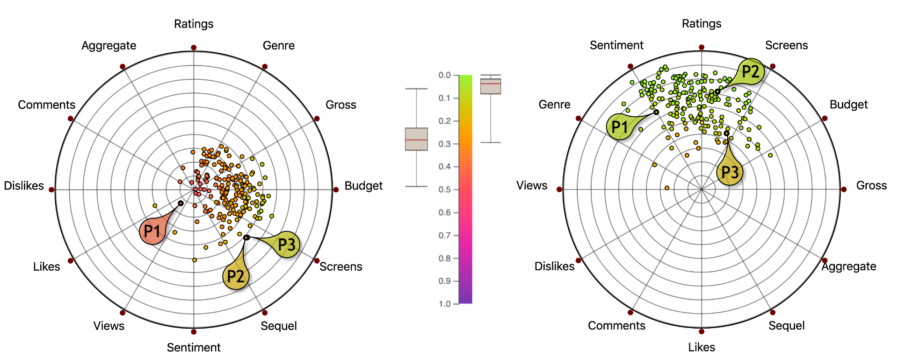

On Improving RadViz Visual Effectiveness

Abstract
RadViz plays a central role in multidimensional analysis because it uses familiar 2D points for encoding data elements and allows for interpreting them along the original data dimensions. However, it is very likely that this approach will produce misleading
plots that hinder the visual analysis, even while dealing with a single point. In fact, in most cases, using the dimension arrangement that comes with the data produces a plot which leads users to make wrong conclusions
about points values and data distribution, nullifying the advantage of the availability of the original dimensions. This paper attacks this problem without altering the original RadViz design: it defines, for both a single
point and a set of points, the novel metric of effectiveness error, and uses it to define the objective (cost) function of a dimension arrangement: minimizing such an error reduces wrong value judgments caused by the fact
that the positions of points \emph{do not} reflect the magnitude of their attribute values.
This paper argues that minimizing the effectiveness error increases the overall RadViz isual quality and makes more effective the basic task of analyzing the RadViz data dimension reduction in the context of its
original attributes. Indeed, this paper has successfully investigated the intuition that reducing the effectiveness error is beneficial also for other well-known RadViz problems, like points clumping toward the center,
many-to-one plotting of non-proportional points, and cluster separation.
To deal with the intractable problem of exploring all the dimension arrangements this paper presents an algorithm that reduces to zero the effectiveness error for a single point and a heuristic that approximates
the dimension arrangement minimizing the effectiveness error for an arbitrary set of points. To support the proposed ideas and solutions, this paper presents a comprehensive set of experiments based on 23 real datasets,
with the goals of a) analyzing the advantages of reducing effectiveness errors, b) comparing the paper dimension arrangement strategy with other related proposals, and c) investigating the heuristic accuracy.
According to the obtained results, it is the authors' belief that computing the dimension arrangement minimizing the effectiveness error for the whole dataset should be a preliminary step before presenting any
RadViz plot to the user, in order to reduce the risk of data misinterpretations.
The Effectiveness Error metric, the algorithm, and the heuristic presented in this paper have been made available in an open-source d3.js plugin at https://aware-diag-sapienza.github.io/d3-radviz, along with an
experimental environment.